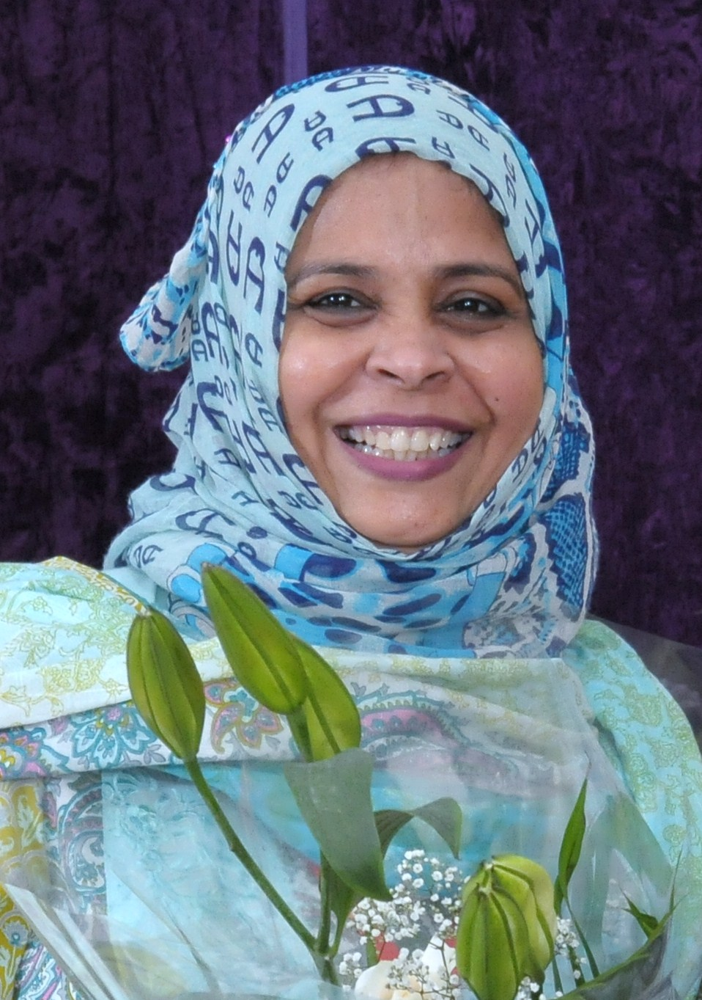

Home
About Us
What is MUN?
Origin
Secretariat
Alumni
Conference
Delegate Handbook
Theme
Committees
Schedule
CAMUNication
2012
DAY 1
DAY 2
Gallery
Contact
Prabha Sinha
MUN Coordinator
Ritvik Sinha
Keerthana Prakash
Secretery General
Director General

Rahila Arif
Operations in-charge
Advisory Board
Technical Specialists
Board of Directors
Developed by: Mohammed Mehraj
Designed by: Ritvik Sinha
Connect with
CAM
UN